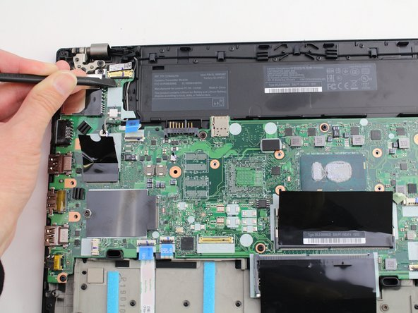

Qualify and replace a ThinkPad T480 motherboard
Prove what needs replacing, match a donor board by service part number and verify ports, power and memory after the swap.
Establish the last good stage before committing to a board
Use a ThinkPad T480, machine type 20L5 or 20L6, with an owned spare drive or no drive for the initial firmware tests. Record charger detection, keyboard lights or model diagnostics, supported memory and whether a picture appears before the OS. Try one exact known-good removable module where the manual permits it. A fault that follows the SO-DIMM, removable jack or panel gives you a narrower job. If a soldered memory configuration is suspected on another laptop, use that model's manual to establish whether the chip, a socket, a regulator or the motherboard is field-replaceable. P91 compare sticks and slots · P97 localise a shorted branch.

Photo by Sarah Westberg for iFixit, scaled with on-page callouts. Original repair photograph · CC BY-NC-SA 3.0.

Photo by Sarah Westberg for iFixit, scaled with on-page callouts. Original repair photograph · CC BY-NC-SA 3.0.
Watch. Locate the separate internal battery and system board removal and replacement demonstrations. Observe which contacts must be clear before the board moves. Lenovo's T470 and T480 service videos · Thinkplus demonstrates a T480 board swap · iFixit's T480 photo sequence.
Match the replacement before it comes to the bench
Use the service part number. Find the Lenovo field-replaceable unit (FRU) in the parts lookup using the recipient's model details. Ask the seller for a photograph of the replacement's FRU label and relevant edges, the installed processor and graphics variant, and a return policy. Confirm the matching cooling assembly and connector layout. A common chassis name can have several board variants. Lenovo Parts Lookup.
Prepare for the storage and firmware consequences. On a customer machine, confirm a backup and the owner's ability to recover encrypted storage before changing the board. A changed TPM can trigger a BitLocker recovery prompt. Let the owner handle their recovery key. Confirm the donor is free of firmware locks through the seller or legitimate service route. Record only the necessary repair identifiers. Microsoft's BitLocker recovery overview.
Keep the reference separate. Photograph the port edges, labels and thermal layout. Confirm the donor's behaviour in its own compatible host where possible. Use a proven board and change one suspect assembly at a time if the diagnostic result matters.
Transfer the parts one group at a time
Lay out screw positions, spudger, correct bit, ESD equipment, compatible cooling materials and the exact manual. On the T480, follow the manufacturer procedure to disable a working internal battery, then remove external power and the removable battery, and disconnect the internal battery in the prescribed sequence. If the laptop cannot enter setup, use Lenovo's documented isolation route for a non-starting system. Get qualified help if you cannot establish isolation, or if there is a swollen pack or widespread liquid damage. T480 manuals and hardware maintenance guide.
Photograph the ribbon latch and pull-tab positions by group as you go. Mark antenna leads by the manual. Follow the listed removal order and never use a remaining cable or port as a hinge. Group and count screws by length.
Transfer only compatible removable items. Inspect the receiving sockets and standoffs first. Fit the matching heatsink, with the correct pad positions and thermal material for that variant, before testing. Use the service manual's screw order and restore cable routing, insulation and shields. P94 thermal assembly comparison.
Reassemble to the manufacturer test state. Start with firmware or OEM diagnostics and a service drive before trusting valuable storage to the repair. Follow the exact manufacturer's procedure for any system-board identity, firmware or feature-related service steps.
Run the acceptance checks on the assembled laptop
| Area disturbed | Hand-back evidence |
|---|---|
| Power and battery | Matching charger is recognised, battery behaviour is stable and the original fault no longer reproduces over several cold boots and shutdowns. |
| Memory and storage | Firmware reports the installed capacity and storage. Boot from a shop-owned drive and run the supported memory and storage diagnostics. |
| Cooling and I/O | A comparable load produces expected fan behaviour. Test both display paths where supported, then keyboard, touchpad, Wi-Fi, USB and audio as applicable to the cables touched. |
Compare board price, fitting, test time and warranty risk against like-for-like working units. If a proven local fault can be repaired reliably and affordably, quote that option. If a compatible board gives a better result, show the customer the diagnostic evidence and the acceptance tests.